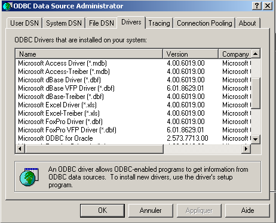

7. Accès aux bases de données
7.1. Généralités
Il existe de nombreuses bases de données pour les plate-formes windows. Pour y accéder, les applications passent au travers de programmes appelés pilotes (drivers).
 |
Dans le schéma ci-dessus, le pilote présente deux interfaces :
- l'interface I1 présentée à l'application
- l'interface I2 vers la base de données
Afin d'éviter qu'une application écrite pour une base de données B1 doive être ré-écrite si on migre vers une base de données B2 différente, un effort de normalisation a été fait sur l'interface I1. Si on utilise des bases de données utilisant des pilotes "normalisés", la base B1 sera fournie avec un pilote P1, la base B2 avec un pilote P2, et l'interface I1 de ces deux pilotes sera identique. Aussi n'aura-t-on pas à ré-écrire l'application. On pourra ainsi, par exemple, migrer une base de données ACCESS vers une base de données MySQL sans changer l'application.
Il existe deux types de pilotes normalisés :
- les pilotes ODBC (Open DataBase Connectivity)
- les pilotes OLE DB (Object Linking and Embedding DataBase)
Les pilotes ODBC permettent l'accès à des bases de données. Les sources de données pour les pilotes OLE DB sont plus variées : bases de données, messageries, annuaires, ... Il n'y a pas de limite. Toute source de données peut faire l'objet d'un pilote OLE DB si un éditeur le décide. L'intérêt est évidemment grand : on a un accès uniforme à une grande variété de données.
La plate-forme .NET est livrée avec deux types de classes d'accès aux données :
- les classes SQL Server.NET
- les classes OLE Db.NET
Les premières classes permettent un accès direct au SGBD SQL Server de Microsoft sans pilote intermédiaire. Les secondes permettent l'accès aux sources de données OLE DB.

La plate-forme .NET est fournie (mai 2002) avec trois pilotes OLE DB pour respectivement : SQL Server, Oracle et Microsoft Jet (Access). Si on veut travailler avec une base de données ayant un pilote ODBC mais pas de pilote OLE DB, on ne peut pas. Ainsi on ne peut pas travailler avec le SGBD MySQL qui (mai 2002) ne fournit pas de pilote OLE DB. Il existe cependant une série de classes permettant l'accès aux sources de données ODBC, les classes odbc.net. Elles ne sont pas livrées en standard avec le SDK et il faut aller les chercher sur le site de Microsoft. Dans les exemples qui vont suivre, nous utiliserons surtout ces classes ODBC car la plupart des bases de données sous windows sont livrées avec un tel pilote. Voici par exemple, une liste des pilotes ODBC installés sur une machine Win 2000 (Menu Démarrer/Paramètres/Panneau de configuration/Outils d'administration) :

On choisit l'icône Source de données ODBC :

7.2. Les deux modes d'exploitation d'une source de données
La plate-forme .NET permet l'exploitation d'une source de données de deux manières différentes :
- mode connecté
- mode déconnecté
En mode connecté, l'application
- ouvre une connexion avec la source de données
- travaille avec la source de données en lecture/écriture
- ferme la connexion
En mode déconnecté, l'application
- ouvre une connexion avec la source de données
- obtient une copie mémoire de tout ou partie des données de la source
- ferme la connexion
- travaille avec la copie mémoire des données en lecture/écriture
- lorsque le travail est fini, ouvre une connexion, envoie les données modifiées à la source de données pour qu'elle les prenne en compte, ferme la connexion
Dans les deux cas, c'est l'opération d'exploitation et de mise à jour des données qui prend du temps. Imaginons que ces mises à jour soient faites par un utilisateur faisant des saisies, cette opération peut prendre des dizaines de minutes. Pendant tout ce temps, en mode connecté, la connexion avec la base est maintenue et les modifications immédiatement répercutées. En mode déconnecté, il n'y a pas de connexion à la base pendant la mise à jour des données. Les modifications sont faites uniquement sur la copie mémoire. Elles sont répercutées sur la source de données en une seule fois lorsque tout est terminé.
Quels sont les avantages et inconvénients des deux méthodes ?
- Une connexion est coûteuse en ressources système. S'il y a beaucoup de connexions simultanées, le mode déconnecté permet de réduire leurs durées à un minimum. C'est le cas des applications web ayant des milliers d'utilisateurs.
- L'inconvénient du mode déconnecté est la gestion délicate des mises à jour simultanées. L'utilisateur U1 obtient des données au temps T1 et commence à les modifier. Au temps T2, l'utilisateur U2 accède lui aussi à la source de données et obtient les mêmes données. Entre-temps l'utilisateur U1 a modifié certaines données mais ne les a pas encore transmises à la source de données. U2 travaille donc avec des données dont certaines sont erronées. Les classes .NET offrent des solutions pour gérer ce problème mais il n'est pas simple à résoudre.
- En mode connecté, la mise à jour simultanée de données par plusieurs utilisateurs ne pose normalement pas de problème. La connexion avec la base de données étant maintenue, c'est la base de données elle-même qui gère ces mises à jour simultanées. Ainsi Oracle verrouille une ligne de la base de données dès qu'un utilisateur la modifie. Elle restera verrouillée donc inaccessible aux autres utilisateurs jusqu'à ce que celui qui l'a modifiée valide (commit) sa modification ou l'abandonne (rollback).
- Si les données doivent circuler sur le réseau, le mode déconnecté est à choisir. Il permet d'avoir une photo des données dans un objet appelé dataset qui représente une base de données à lui tout seul. Cet objet peut circuler sur le réseau entre machines.
Nous étudions d'abord le mode connecté.
7.3. Accès aux données en mode connecté
7.3.1. Les bases de données de l'exemple
Nous considérons une base de données ACCESS appelée articles.mdb et n'ayant qu'une table appelée ARTICLES avec la structure suivante :
nom | type |
code | code de l’article sur 4 caractères |
nom | son nom (chaîne de caractères) |
prix | son prix (réel) |
stock_actuel | son stock actuel (entier) |
stock_minimum | le stock minimum (entier) en-deça duquel il faut réapprovisionner l’article |
Son contenu de départ est le suivant :

Nous utiliserons cette base aussi bien au travers d'un pilote ODBC qu'un pilote OLE DB afin de montrer la similitude des deux approches et parce que nous disposons de ces deux types de pilotes pour ACCESS.
Nous utiliserons également une base MySQL DBARTICLES ayant la même unique table ARTICLES, le même contenu et accédé au travers d'un pilote ODBC, afin de montrer que l'application écrite pour exploiter la base ACCESS n'a pas à être modifiée pour utiliser la base MySQL. La base DBARTICLES est accessible à un utilisateur appelé admarticles avec le mot de passe mdparticles. La copie d'écran suivante montre le contenu de la base MySQL :
C:\mysql\bin>mysql --database=dbarticles --user=admarticles --password=mdparticles
Welcome to the MySQL monitor. Commands end with ; or \g.
Your MySQL connection id is 3 to server version: 3.23.49-max-debug
Type 'help' for help.
mysql> show tables;
+----------------------+
| Tables_in_dbarticles |
+----------------------+
| articles |
+----------------------+
1 row in set (0.01 sec)
mysql> select * from articles;
+------+--------------------------------+------+--------------+---------------+
| code | nom | prix | stock_actuel | stock_minimum |
+------+--------------------------------+------+--------------+---------------+
| a300 | vÚlo | 2500 | 10 | 5 |
| b300 | pompe | 56 | 62 | 45 |
| c300 | arc | 3500 | 10 | 20 |
| d300 | flÞches - lot de 6 | 780 | 12 | 20 |
| e300 | combinaison de plongÚe | 2800 | 34 | 7 |
| f300 | bouteilles d'oxygÞne | 800 | 10 | 5 |
+------+--------------------------------+------+--------------+---------------+
6 rows in set (0.02 sec)
mysql> describe articles;
+---------------+-------------+------+-----+---------+-------+
| Field | Type | Null | Key | Default | Extra |
+---------------+-------------+------+-----+---------+-------+
| code | text | YES | | NULL | |
| nom | text | YES | | NULL | |
| prix | double | YES | | NULL | |
| stock_actuel | smallint(6) | YES | | NULL | |
| stock_minimum | smallint(6) | YES | | NULL | |
+---------------+-------------+------+-----+---------+-------+
5 rows in set (0.00 sec)
mysql> exit
Bye
Pour définir la base ACCESS comme source de données ODBC, procédez comme suit :
- activez l'administrateur de sources de données ODBC comme il a été montré plus haut et sélectionnez l'onglet User DSN (DSN=Data Source Name)

- ajoutez une source avec le bouton Add , indiquez que cette source est accessible via un pilote Access et faites Terminer :

- Donnez le nom articles-access à la source de données, mettez une description libre et utilisez le bouton Sélectionner pour désigner le fichier .mdb de la base. Terminez par OK.

La nouvelle source de données apparaît alors dans la liste des sources DSN utilisateur :

Pour définir la base MySQL DBARTICLES comme source de données ODBC, procédez comme suit :
- activez l'administrateur de sources de données ODBC comme il a été montré plus haut et sélectionnez l'onglet User DSN. Ajoutez une nouvelle source de données avec Add et sélectionnez le pilote ODBC de MySQL.

- Faites Terminer. Apparaît alors une page de configuration de la source MySQL :
54321

- dans (1) on donne un nom à notre source de données ODBC
- dans (2) on indique la machine sur laquelle se trouve le serveur MySQL. Ici nous mettons localhost pour indiquer qu'il est sur la même machine que notre application. Si le serveur MySQL était sur une machine M distante, on mettrait là son nom et notre application fonctionnerait alors avec une base de données distante sans modification.
- dans (3) on met le nom de la base. Ici elle s'appelle DBARTICLES.
- dans (4) on met le login admarticles et dans (5) le mot de passe mdparticles.
7.3.2. Utilisation d'un pilote ODBC
Dans une application utilisant une base de données en mode connecté, on trouvera généralement les étapes suivantes :
- Connexion à la base de données
- Émissions de requêtes SQL vers la base
- Réception et traitement des résultats de ces requêtes
- Fermeture de la connexion
Les étapes 2 et 3 sont réalisées de façon répétée, la fermeture de connexion n’ayant lieu qu’à la fin de l’exploitation de la base. C’est un schéma relativement classique dont vous avez peut-être l’habitude si vous avez exploité une base de données de façon interactive. Ces étapes sont les mêmes que la base soit utilisée au travers d'un pilote ODBC ou d'un pilote OLE DB. Nous présentons ci-dessous un exemple avec les classes .NET de gestion des sources de données ODBC. Le programme s'appelle liste et admet comme paramètre le nom DSN d'une source de données ODBC ayant une table ARTICLES. Il affiche alors le contenu de cette table :
dos>liste
syntaxe : pg dsnArticles
dos>liste articles-access
----------------------------------------
code,nom,prix,stock_actuel,stock_minimum
----------------------------------------
a300 vélo 2500 10 5
b300 pompe 56 62 45
c300 arc 3500 10 20
d300 flèches - lot de 6 780 12 20
e300 combinaison de plongée 2800 34 7
f300 bouteilles d'oxygène 800 10 5
dos>liste mysql-artices
Erreur d'exploitation de la base de données (ERROR [IM002] [Microsoft][ODBC Driver Manager] Data source name not found and no default driver specified)
dos>liste mysql-articles
----------------------------------------
code,nom,prix,stock_actuel,stock_minimum
----------------------------------------
a300 vélo 2500 10 5
b300 pompe 56 62 45
c300 arc 3500 10 20
d300 flèches - lot de 6 780 12 20
e300 combinaison de plongée 2800 34 7
f300 bouteilles d'oxygène 800 10 5
Sur les résultats ci-dessus, nous voyons que le programme a listé aussi bien le contenu de la base ACCESS que de la base MySQL. Etudions maintenant le code de ce programme :
' options
Option Explicit On
Option Strict On
' espaces de noms
Imports System
Imports System.Data
Imports Microsoft.Data.Odbc
Imports Microsoft.VisualBasic
Module db1
Sub main(ByVal args As String())
' application console
' affiche le contenu d'une table ARTICLES d'une base DSN
' dont le nom est passé en paramètre
Const syntaxe As String = "syntaxe : pg dsnArticles"
Const tabArticles As String = "articles" ' la table des articles
' vérification des paramètres
' a-t-on 1 paramètre
If args.Length <> 1 Then
' msg d'erreur
Console.Error.WriteLine(syntaxe)
' fin
Environment.Exit(1)
End If
' on récupère le paramètre
Dim dsnArticles As String = args(0) ' la base DSN
' préparation de la connexion à la bd
Dim articlesConn As OdbcConnection = Nothing ' la connexion
Dim myReader As OdbcDataReader = Nothing ' le lecteur de données
' on tente d'accéder à la base de données
Try
' chaîne de connexion à la base
Dim connectString As String = "DSN=" + dsnArticles + ";"
articlesConn = New OdbcConnection(connectString)
articlesConn.Open()
' exécution d'une commande SQL
Dim sqlText As String = "select * from " + tabArticles
Dim myOdbcCommand As New OdbcCommand(sqlText)
myOdbcCommand.Connection = articlesConn
myReader = myOdbcCommand.ExecuteReader()
' Exploitation de la table récupérée
' affichage des colonnes
Dim ligne As String = ""
Dim i As Integer
For i = 0 To (myReader.FieldCount - 1) - 1
ligne += myReader.GetName(i) + ","
Next i
ligne += myReader.GetName(i)
Console.Out.WriteLine((ControlChars.Lf + "".PadLeft(ligne.Length, "-"c) + ControlChars.Lf + ligne + ControlChars.Lf + "".PadLeft(ligne.Length, "-"c) + ControlChars.Lf))
' affichage des données
While myReader.Read()
' exploitation ligne courante
ligne = ""
For i = 0 To myReader.FieldCount - 1
ligne += myReader(i).ToString + " "
Next i
Console.WriteLine(ligne)
End While
Catch ex As Exception
Console.Error.WriteLine(("Erreur d'exploitation de la base de données " + ex.Message + ")"))
Environment.Exit(2)
Finally
' fermeture lecteur
myReader.Close()
' fermeture connexion
articlesConn.Close()
End Try
End Sub
End Module
Les classes de gestion des sources ODBC se trouvent dans l'espace de noms Microsoft.Data.Odbc qu'on doit donc importer. Par ailleurs, un certain nombre de classes se trouve dans l'espace de noms System.Data.
Imports System.Data
Imports Microsoft.Data.Odbc
Les espaces de noms utilisés par le programme sont dans différents assemblages. On compile le programme avec la commande suivante :
dos>vbc /r:microsoft.data.odbc.dll /r:microsoft.visualbasic.dll /r:system.dll /r:system.data.dll db1.vb
7.3.2.1. La phase de connexion
Une connexion ODBC utilise la classe OdbcConnection. Le constructeur de cette classe admet comme paramètre ce qu'on appelle une chaîne de connexion. Celle-ci est une chaîne de caractères qui définit tous les paramètres nécessaires pour que la connexion à la base de données puisse se faire. Ces paramètres peuvent être très nombreux et donc la chaîne complexe. La chaîne a la forme "param1=valeur1;param2=valeur2;...;paramj=valeurj;".Voici quelques paramètres paramj possibles :
nom d'un utilisateur qui va accéder à la base de données | |
mot de passe de cet utilisateur | |
nom DSN de la base si elle en a un | |
nom de la base de données accédée | |
Si on définit une source de données comme source de données ODBC à l'aide de l'administrateur de sources de données ODBC, ces paramètres ont déjà été donnés et enregistrés. Il suffit alors de passer le paramètre DSN qui donne le nom DSN de la source de données. C'est ce qui est fait ici :
' préparation de la connexion à la bd
Dim articlesConn As OdbcConnection = Nothing ' la connexion
Dim myReader As OdbcDataReader = Nothing ' le lecteur de données
Try
' on tente d'accéder à la base de données
' chaîne de connexion à la base
Dim connectString As String = "DSN=" + dsnArticles + ";"
articlesConn = New OdbcConnection(connectString)
articlesConn.Open()
Une fois l'objet OdbcConnection construit, on ouvre la connexion avec la méthode Open. Cette ouverture peut échouer comme toute autre opération sur la base. C'est pourquoi l'ensemble du code d'accès à la base est-il dans un try-catch. Une fois la connexion établie, on peut émettre des requêtes SQL sur la base.
7.3.2.2. Émettre des requêtes SQL
Pour émettre des requêtes SQL, il nous faut un objet Command, ici plus exactement un objet OdbcCommand puisque nous utilisons une source de données ODBC. La classe OdbcCommand a plusieurs constructeurs :
- OdbcCommand() : crée un objet Command vide. Il faudra pour l'utiliser préciser ultérieurement diverses propriétés :
- CommandText : le texte de la requête SQL à exécuter
- Connection : l'objet OdbcConnection représentant la connexion à la base de données sur laquelle la requête sera faite
- CommandType : le type de la requête SQL. Il y a trois valeurs possibles
- CommandType.Text : la propriété CommandText contient le texte d'une requête SQL (valeur par défaut)
- CommandType.StoredProcedure : la propriété CommandText contient le nom d'une procédure stockée dans la base
- CommandType.TableDirect : la propriété CommandText contient le nom d'une table T. Equivalent à select * from T. N'existe que pour les pilotes OLE DB.
- OdbcCommand(string sqlText) : le paramètre sqlText sera affecté à la propriété CommandText. C'est le texte de la requête SQL à exécuter. La connexion devra être précisée dans la propriété Connection.
- OdbcCommand(string sqlText, OdbcConnection connexion) : le paramètre sqlText sera affecté à la propriété CommandText et le paramètre connexion à la propriété Connection.
Pour émettre la requête SQL, on dispose de deux méthodes :
- OdbcdataReader ExecuteReader() : envoie la requête SELECT de CommandText à la connexion Connection et construit un objet OdbcDataReader permettant l'accès à toutes les lignes de la table résultat du select
- int ExecuteNOnQuery() : envoie la requête de mise à jour (INSERT, UPDATE, DELETE) de CommandText à la connexion Connection et rend le nombre de lignes affectées par cette mise à jour.
Dans notre exemple, après avoir ouvert la connexion à la base, nous émettons une requête SQL SELECT pour avoir le contenu de la table ARTICLES :
' exécution d'une commande SQL
Dim sqlText As String = "select * from " + tabArticles
Dim myOdbcCommand As New OdbcCommand(sqlText)
myOdbcCommand.Connection = articlesConn
myReader = myOdbcCommand.ExecuteReader()
Une requête d’interrogation est classiquement une requête du type :
select col1, col2,... from table1, table2,...
where condition
order by expression
...
Seuls les mots clés de la première ligne sont obligatoires, les autres sont facultatifs. Il existe d’autres mots clés non présentés ici.
- Une jointure est faite avec toutes les tables qui sont derrière le mot clé from
- Seules les colonnes qui sont derrière le mot clé select sont conservées
- Seules les lignes vérifiant la condition du mot clé where sont conservées
- Les lignes résultantes ordonnées selon l’expression du mot clé order by forment le résultat de la requête.
Le résultat d’un select est une table. Si on considère la table ARTICLES précédente et qu’on veuille les noms des articles dont le stock actuel est au-dessous du seuil minimal, on écrira :
select nom from articles where stock_actuel<stock_minimum
Si on les veut par ordre alphabétique des noms, on écrira :
select nom from articles where stock_actuel<stock_minimum order by nom
7.3.2.3. Exploitation du résultat d'une requête SELECT
Le résultat d'une requête SELECT en mode non connecté est un objet DataReader, ici un objet OdbcDataReader. Cet objet permet d'obtenir séquentiellement toutes les lignes du résultat et d'avoir des informations sur les colonnes de ces résultats. Examinons quelques propriétés et méthodes de cette classe :
le nombre de colonnes de la table | |
Item(i) représente la colonne n° i de la ligne courante du résultat | |
la valeur de la colonne n° i de la ligne courante rendue comme type XXX(Int16, Int32, Int64, Double, String, Boolean, ...) | |
nom de la colonne n° i | |
ferme l'objet OdbcdataReader et libère les ressources associées | |
avance d'une ligne dans la table des résultats. Rend faux si cela n'est pas possible. La nouvelle ligne devient la ligne courante du lecteur. |
L'exploitation du résultat d'un select est typiquement une exploitation séquentielle analogue à celle des fichiers texte : on ne peut qu'avancer dans la table, pas reculer :
While myReader.Read()
' on a une ligne - on l'exploite
....
' ligne suivante
end while
Ces explications suffisent à comprendre le code suivant de notre exemple :
' Exploitation de la table récupérée
' affichage des colonnes
Dim ligne As String = ""
Dim i As Integer
For i = 0 To (myReader.FieldCount - 1) - 1
ligne += myReader.GetName(i) + ","
Next i
ligne += myReader.GetName(i)
Console.Out.WriteLine((ControlChars.Lf + "".PadLeft(ligne.Length, "-"c) + ControlChars.Lf + ligne + ControlChars.Lf + "".PadLeft(ligne.Length, "-"c) + ControlChars.Lf))
' affichage des données
While myReader.Read()
' exploitation ligne courante
ligne = ""
For i = 0 To myReader.FieldCount - 1
ligne += myReader(i).ToString + " "
Next i
Console.WriteLine(ligne)
End While
La seule difficulté est dans l'instruction où les valeurs des différentes colonnes de la ligne courante sont concaténées :
For i = 0 To myReader.FieldCount - 1
ligne += myReader(i).ToString + " "
Next i
La notation ligne+=myReader(i).ToString est traduit par ligne+=myReader.Item(i).ToString() où Item(i) est la valeur de la colonne i de la ligne courante.
7.3.2.4. Libération des ressources
Les classes OdbcReader et OdbcConnection possèdent toutes deux une méthode Close() qui libère les ressources associées aux objets ainsi fermés.
7.3.3. Utilisation d'un pilote OLE DB
Nous reprenons le même exemple, cette fois avec une base accédée via un pilote OLE DB. La plate-forme .NET fournit un tel pilote pour les bases ACCESS. Aussi allons-nous utiliser la même base articles.mdb que précédemment. Nous cherchons à montrer ici que si les classes changent, les concepts restent les mêmes :
- la connexion est représentée par un objet OleDbConnection
- une requête SQL est émise grâce à un objet OleDbCommand
- si cette requête est une clause SELECT, on obtiendra en retour un objet OleDbDataReader pour accéder aux lignes de la table résultat
Ces classes sont dans l'espace de noms System.Data.OleDb. Le programme précédent peut être transformé aisément pour gérer une base OLE DB :
- on remplace partout OdbcXX par OleDbXX
- on modifie la chaîne de connexion. Pour une base ACCESS sans login/mot de passe, la chaîne de connexion est Provider=Microsoft.JET.OLEDB.4.0;Data Source=[fichier.mdb]. La partie paramètrable de cette chaîne est le nom du fichier ACCESS à utiliser. Nous modifierons notre programme pour qu'il accepte en paramètre le nom de ce fichier.
- l'espace de noms à importer est maintenant System.Data.OleDb.
Notre programme devient le suivant :
' options
Option Explicit On
Option Strict On
' espaces de noms
Imports System
Imports System.Data
Imports Microsoft.Data.Odbc
Imports Microsoft.VisualBasic
Imports System.Data.OleDb
Module db2
Public Sub Main(ByVal args() As String)
' application console
' affiche le contenu d'une table ARRTICLES d'une base DSN
' dont le nom est passé en paramètre
Const syntaxe As String = "syntaxe : pg base_access_articles"
Const tabArticles As String = "articles" ' la table des articles
' vérification des paramètres
' a-t-on 1 paramètre
If args.Length <> 1 Then
' msg d'erreur
Console.Error.WriteLine(syntaxe)
' fin
Environment.Exit(1)
End If
' on récupère le paramètre
Dim dbArticles As String = args(0) ' la base de données
' préparation de la connexion à la bd
Dim articlesConn As OleDbConnection = Nothing ' la connexion
Dim myReader As OleDbDataReader = Nothing ' le lecteur de données
' on tente d'accéder à la base de données
Try
' chaîne de connexion à la base
Dim connectString As String = "Provider=Microsoft.JET.OLEDB.4.0;Data Source=" + dbArticles + ";"
articlesConn = New OleDbConnection(connectString)
articlesConn.Open()
' exécution d'une commande SQL
Dim sqlText As String = "select * from " + tabArticles
Dim myOleDbCommand As New OleDbCommand(sqlText)
myOleDbCommand.Connection = articlesConn
myReader = myOleDbCommand.ExecuteReader()
' Exploitation de la table récupérée
' affichage des colonnes
Dim ligne As String = ""
Dim i As Integer
For i = 0 To (myReader.FieldCount - 1) - 1
ligne += myReader.GetName(i) + ","
Next i
ligne += myReader.GetName(i)
Console.Out.WriteLine((ControlChars.Lf + "".PadLeft(ligne.Length, "-"c) + ControlChars.Lf + ligne + ControlChars.Lf + "".PadLeft(ligne.Length, "-"c) + ControlChars.Lf))
' affichage des données
While myReader.Read()
' exploitation ligne courante
ligne = ""
For i = 0 To myReader.FieldCount - 1
ligne += myReader(i).ToString + " "
Next i
Console.WriteLine(ligne)
End While
Catch ex As Exception
Console.Error.WriteLine(("Erreur d'exploitation de la base de données (" + ex.Message + ")"))
Environment.Exit(2)
Finally
' fermeture lecteur
myReader.Close()
' fermeture connexion
articlesConn.Close()
End Try
' fin
Environment.Exit(0)
End Sub
End Module
Les résultats obtenus :
dos>vbc liste.vb
E:\data\serge\MSNET\vb.net\adonet\6>dir
07/05/2002 15:09 2 325 liste.CS
07/05/2002 15:09 4 608 liste.exe
20/08/2001 11:54 86 016 ARTICLES.MDB
dos>liste articles.mdb
----------------------------------------
code,nom,prix,stock_actuel,stock_minimum
----------------------------------------
a300 vélo 2500 10 5
b300 pompe 56 62 45
c300 arc 3500 10 20
d300 flèches - lot de 6 780 12 20
e300 combinaison de plongée 2800 34 7
f300 bouteilles d'oxygène 800 10 5
7.3.4. Mise à jour d'une table
Les exemples précédents se contentaient de lister le contenu d'une table. Nous modifions notre programme de gestion de la base d'articles afin qu'il puisse modifier celle-ci. Le programme s'appelle sql. On lui passe en paramètre le nom DSN de la base d'articles à gérer. L'utilisateur tape directement des commandes SQL au clavier que le programme exécute comme le montrent les résultats qui suivent obtenus sur la base MySQL d'articles :
dos>vbc /r:microsoft.data.odbc.dll sql.vb
dos>sql mysql-articles
Requête SQL (fin pour arrêter) : select * from articles
----------------------------------------
code,nom,prix,stock_actuel,stock_minimum
----------------------------------------
a300 vélo 2500 10 5
b300 pompe 56 62 45
c300 arc 3500 10 20
d300 flèches - lot de 6 780 12 20
e300 combinaison de plongée 2800 34 7
f300 bouteilles d'oxygène 800 10 5
Requête SQL (fin pour arrêter) : select * from articles where stock_actuel<stock_minimum
----------------------------------------
code,nom,prix,stock_actuel,stock_minimum
----------------------------------------
c300 arc 3500 10 20
d300 flèches - lot de 6 780 12 20
Requête SQL (fin pour arrêter) : insert into articles values ("1","1",1,1,1)
Il y a eu 1 ligne(s) modifiée(s)
Requête SQL (fin pour arrêter) : select * from articles
----------------------------------------
code,nom,prix,stock_actuel,stock_minimum
----------------------------------------
a300 vélo 2500 10 5
b300 pompe 56 62 45
c300 arc 3500 10 20
d300 flèches - lot de 6 780 12 20
e300 combinaison de plongée 2800 34 7
f300 bouteilles d'oxygène 800 10 5
1 1 1 1 1
Requête SQL (fin pour arrêter) : update articles set nom="2" where nom="1"
Il y a eu 1 ligne(s) modifiée(s)
Requête SQL (fin pour arrêter) : select * from articles
----------------------------------------
code,nom,prix,stock_actuel,stock_minimum
----------------------------------------
a300 vélo 2500 10 5
b300 pompe 56 62 45
c300 arc 3500 10 20
d300 flèches - lot de 6 780 12 20
e300 combinaison de plongée 2800 34 7
f300 bouteilles d'oxygène 800 10 5
1 2 1 1 1
Requête SQL (fin pour arrêter) : delete from articles where code="1"
Il y a eu 1 ligne(s) modifiée(s)
Requête SQL (fin pour arrêter) : select * from articles
----------------------------------------
code,nom,prix,stock_actuel,stock_minimum
----------------------------------------
a300 vélo 2500 10 5
b300 pompe 56 62 45
c300 arc 3500 10 20
d300 flèches - lot de 6 780 12 20
e300 combinaison de plongée 2800 34 7
f300 bouteilles d'oxygène 800 10 5
Requête SQL (fin pour arrêter) : select * from articles order by nom asc
----------------------------------------
code,nom,prix,stock_actuel,stock_minimum
----------------------------------------
c300 arc 3500 10 20
f300 bouteilles d'oxygène 800 10 5
e300 combinaison de plongée 2800 34 7
d300 flèches - lot de 6 780 12 20
b300 pompe 56 62 45
a300 vélo 2500 10 5
Requête SQL (fin pour arrêter) : fin
Le programme est le suivant :
' options
Option Explicit On
Option Strict On
' espaces de noms
Imports System
Imports System.Data
Imports Microsoft.Data.Odbc
Imports System.Data.OleDb
Imports System.Text.RegularExpressions
Imports System.Collections
Imports Microsoft.VisualBasic
Module db3
Public Sub Main(ByVal args() As String)
' application console
' exécute des requêtes SQL tapées au clavier sur une
' table ARTICLES d'une base DSN dont le nom est passé en paramètre
Const syntaxe As String = "syntaxe : pg dsnArticles"
' vérification des paramètres
' a-t-on 2 paramètres
If args.Length <> 1 Then
' msg d'erreur
Console.Error.WriteLine(syntaxe)
' fin
Environment.Exit(1)
End If 'if
' on récupère le paramètre
Dim dsnArticles As String = args(0)
' chaîne de connexion à la base
Dim connectString As String = "DSN=" + dsnArticles + ";"
' préparation de la connexion à la bd
Dim articlesConn As OdbcConnection = Nothing
Dim sqlCommand As OdbcCommand = Nothing
Try
' on tente d'accéder à la base de données
articlesConn = New OdbcConnection(connectString)
articlesConn.Open()
' on crée un objet command
sqlCommand = New OdbcCommand("", articlesConn)
'try
Catch ex As Exception
' msg d'erreur
Console.Error.WriteLine(("Erreur d'exploitation de la base de données (" + ex.Message + ")"))
' libération des ressources
Try
articlesConn.Close()
Catch
End Try
Environment.Exit(2)
End Try 'catch
' on construit un dictionnaire des commandes sql acceptées
Dim commandesSQL() As String = {"select", "insert", "update", "delete"}
Dim dicoCommandes As New Hashtable
Dim i As Integer
For i = 0 To commandesSQL.Length - 1
dicoCommandes.Add(commandesSQL(i), True)
Next i
' lecture-exécution des commandes SQL tapées au clavier
Dim requête As String = Nothing ' texte de la requête SQL
Dim champs() As String ' les champs de la requête
Dim modèle As New Regex("\s+")
' boucle de saisie-exécution des commandes SQL tapées au clavier
While True
' pas d'erreur au départ
Dim erreur As Boolean = False
' demande de la requête
Console.Out.Write(ControlChars.Lf + "Requête SQL (fin pour arrêter) : ")
requête = Console.In.ReadLine().Trim().ToLower()
' fini ?
If requête = "fin" Then
Exit While
End If
' on décompose la requête en champs
champs = modèle.Split(requête)
' requête valide ?
If champs.Length = 0 Or Not dicoCommandes.ContainsKey(champs(0)) Then
' msg d'erreur
Console.Error.WriteLine("Requête invalide. Utilisez select, insert, update, delete")
' requête suivante
erreur = True
End If
If Not erreur Then
' préparation de l'objet Command pour exécuter la requête
sqlCommand.CommandText = requête
' exécution de la requête
Try
If champs(0) = "select" Then
executeSelect(sqlCommand)
Else
executeUpdate(sqlCommand)
End If
Catch ex As Exception
' msg d'erreur
Console.Error.WriteLine(("Erreur d'exploitation de la base de données (" + ex.Message + ")"))
End Try
End If
End While
' libération des ressources
Try
articlesConn.Close()
Catch
End Try
Environment.Exit(0)
End Sub
' exécution d'une requête de mise à jour
Sub executeUpdate(ByVal sqlCommand As OdbcCommand)
' exécute sqlCommand, requête de mise à jour
Dim nbLignes As Integer = sqlCommand.ExecuteNonQuery()
' affichage
Console.Out.WriteLine(("Il y a eu " & nbLignes & " ligne(s) modifiée(s)"))
End Sub
' exécution d'une requête Select
Sub executeSelect(ByVal sqlCommand As OdbcCommand)
' exécute sqlCommand, requête select
Dim myReader As OdbcDataReader = sqlCommand.ExecuteReader()
' Exploitation de la table récupérée
' affichage des colonnes
Dim ligne As String = ""
Dim i As Integer
For i = 0 To (myReader.FieldCount - 1) - 1
ligne += myReader.GetName(i) + ","
Next i
ligne += myReader.GetName(i)
Console.Out.WriteLine((ControlChars.Lf + "".PadLeft(ligne.Length, "-"c) + ControlChars.Lf + ligne + ControlChars.Lf + "".PadLeft(ligne.Length, "-"c) + ControlChars.Lf))
' affichage des données
While myReader.Read()
' exploitation ligne courante
ligne = ""
For i = 0 To myReader.FieldCount - 1
ligne += myReader(i).ToString + " "
Next i
' affichage
Console.WriteLine(ligne)
End While
' libération des ressources
myReader.Close()
End Sub
End Module
Nous ne commentons ici que ce qui est nouveau par rapport au programme précédent :
- Nous construisons un dictionnaire des commandes sql acceptées :
' on construit un dictionnaire des commandes sql acceptées
Dim commandesSQL() As String = {"select", "insert", "update", "delete"}
Dim dicoCommandes As New Hashtable
Dim i As Integer
For i = 0 To commandesSQL.Length - 1
dicoCommandes.Add(commandesSQL(i), True)
Next i
ce qui nous permet ensuite de vérifier simplement si le 1er mot (champs[0]) de la requête tapée est l'une des quatre commandes acceptées :
' requête valide ?
If champs.Length = 0 Or Not dicoCommandes.ContainsKey(champs(0)) Then
' msg d'erreur
Console.Error.WriteLine("Requête invalide. Utilisez select, insert, update, delete")
' requête suivante
erreur = True
End If 'if
- Auparavant la requête avait été décomposée en champs à l'aide de la méthode Split de la classe RegEx :
Dim modèle As New Regex("\s+")
....
' on décompose la requête en champs
champs = modèle.Split(requête)
Les mots composant la requête peuvent être séparés d'un nombre quelconque d'espaces.
- L'exécution d'une requête select n'utilise pas la même méthode que celle d'une requête d'une mise à jour (insert, update, delete). Aussi doit-on faire un test et exécuter une fonction différente pour chacu de ces deux cas :
' préparation de l'objet Command pour exécuter la requête
sqlCommand.CommandText = requête
' exécution de la requête
Try
If champs(0) = "select" Then
executeSelect(sqlCommand)
Else
executeUpdate(sqlCommand)
End If 'try
Catch ex As Exception
' msg d'erreur
Console.Error.WriteLine(("Erreur d'exploitation de la base de données (" + ex.Message + ")"))
End Try
L'exécution d'une requête SQL peut générer une exception qui est ici gérée.
- La fonction executeSelect reprend tout ce qui a été vu dans les exemples précédents.
- La fonction executeUpdate utilise la méthode ExecuteNonQuery de la class OdbcCommand qui rend le nombre de lignes affectées par la commande.
7.3.5. IMPOTS
Nous reprenons l'objet impôt construit dans un chapitre précédent :
' options
Option Strict On
Option Explicit On
' espaces de noms
Imports System
Public Class impôt
' les données nécessaires au calcul de l'impôt
' proviennent d'une source extérieure
Private limites(), coeffR(), coeffN() As Decimal
' constructeur
Public Sub New(ByVal LIMITES() As Decimal, ByVal COEFFR() As Decimal, ByVal COEFFN() As Decimal)
' on vérifie que les 3 tablaeux ont la même taille
Dim OK As Boolean = LIMITES.Length = COEFFR.Length And LIMITES.Length = COEFFN.Length
If Not OK Then
Throw New Exception("Les 3 tableaux fournis n'ont pas la même taille(" & LIMITES.Length & "," & COEFFR.Length & "," & COEFFN.Length & ")")
End If
' c'est bon
Me.limites = LIMITES
Me.coeffR = COEFFR
Me.coeffN = COEFFN
End Sub
' calcul de l'impôt
Public Function calculer(ByVal marié As Boolean, ByVal nbEnfants As Integer, ByVal salaire As Integer) As Long
' calcul du nombre de parts
Dim nbParts As Decimal
If marié Then
nbParts = CDec(nbEnfants) / 2 + 2
Else
nbParts = CDec(nbEnfants) / 2 + 1
End If
If nbEnfants >= 3 Then
nbParts += 0.5D
End If
' calcul revenu imposable & Quotient familial
Dim revenu As Decimal = 0.72D * salaire
Dim QF As Decimal = revenu / nbParts
' calcul de l'impôt
limites((limites.Length - 1)) = QF + 1
Dim i As Integer = 0
While QF > limites(i)
i += 1
End While
' retour résultat
Return CLng(revenu * coeffR(i) - nbParts * coeffN(i))
End Function
End Class
Nous lui ajoutons un nouveau constructeur permettant d'initialiser les tableaux limites, coeffR, coeffN à partir d'une base de données ODBC :
Imports System.Data
Imports Microsoft.Data.Odbc
Imports System.Collections
...
' constructeur 2
Public Sub New(ByVal DSNimpots As String, ByVal Timpots As String, ByVal colLimites As String, ByVal colCoeffR As String, ByVal colCoeffN As String)
' initialise les trois tableaux limites, coeffR, coeffN à partir
' du contenu de la table Timpots de la base ODBC DSNimpots
' colLimites, colCoeffR, colCoeffN sont les trois colonnes de cette table
' peut lancer une exception
Dim connectString As String = "DSN=" + DSNimpots + ";" ' chaîne de connexion à la base
Dim impotsConn As OdbcConnection = Nothing ' la connexion
Dim sqlCommand As OdbcCommand = Nothing ' la commande SQL
' la requête SELECT
Dim selectCommand As String = "select " + colLimites + "," + colCoeffR + "," + colCoeffN + " from " + Timpots
' tableaux pour récupérer les données
Dim tLimites As New ArrayList
Dim tCoeffR As New ArrayList
Dim tCoeffN As New ArrayList
' on tente d'accéder à la base de données
impotsConn = New OdbcConnection(connectString)
impotsConn.Open()
' on crée un objet command
sqlCommand = New OdbcCommand(selectCommand, impotsConn)
' on exécute la requête
Dim myReader As OdbcDataReader = sqlCommand.ExecuteReader()
' Exploitation de la table récupérée
While myReader.Read()
' les données de la ligne courante sont mis dans les tableaux
tLimites.Add(myReader(colLimites))
tCoeffR.Add(myReader(colCoeffR))
tCoeffN.Add(myReader(colCoeffN))
End While
' libération des ressources
myReader.Close()
impotsConn.Close()
' les tableaux dynamiques sont mis dans des tableaux statiques
Me.limites = New Decimal(tLimites.Count) {}
Me.coeffR = New Decimal(tLimites.Count) {}
Me.coeffN = New Decimal(tLimites.Count) {}
Dim i As Integer
For i = 0 To tLimites.Count - 1
limites(i) = Decimal.Parse(tLimites(i).ToString())
coeffR(i) = Decimal.Parse(tCoeffR(i).ToString())
coeffN(i) = Decimal.Parse(tCoeffN(i).ToString())
Next i
End Sub
Le programme de test est le suivant : il reçoit en arguments les paramètres à transmettre au constructeur de la classe impôt. Après avoir construit un objet impôt, il fait des calculs d'impôt à payer :
Option Explicit On
Option Strict On
' espaces de noms
Imports System
Imports Microsoft.VisualBasic
' pg de test
Module testimpots
Sub Main(ByVal arguments() As String)
' programme interactif de calcul d'impôt
' l'utilisateur tape trois données au clavier : marié nbEnfants salaire
' le programme affiche alors l'impôt à payer
Const syntaxe1 As String = "pg DSNimpots tabImpots colLimites colCoeffR colCoeffN"
Const syntaxe2 As String = "syntaxe : marié nbEnfants salaire" + ControlChars.Lf + "marié : o pour marié, n pour non marié" + ControlChars.Lf + "nbEnfants : nombre d'enfants" + ControlChars.Lf + "salaire : salaire annuel en F"
' vérification des paramètres du programme
If arguments.Length <> 5 Then
' msg d'erreur
Console.Error.WriteLine(syntaxe1)
' fin
Environment.Exit(1)
End If 'if
' on récupère les arguments
Dim DSNimpots As String = arguments(0)
Dim tabImpots As String = arguments(1)
Dim colLimites As String = arguments(2)
Dim colCoeffR As String = arguments(3)
Dim colCoeffN As String = arguments(4)
' création d'un objet impôt
Dim objImpôt As impôt = Nothing
Try
objImpôt = New impôt(DSNimpots, tabImpots, colLimites, colCoeffR, colCoeffN)
Catch ex As Exception
Console.Error.WriteLine(("L'erreur suivante s'est produite : " + ex.Message))
Environment.Exit(2)
End Try
' boucle infinie
While True
' au départ pas d'erreurs
Dim erreur As Boolean = False
' on demande les paramètres du calcul de l'impôt
Console.Out.Write("Paramètres du calcul de l'impôt au format marié nbEnfants salaire ou rien pour arrêter :")
Dim paramètres As String = Console.In.ReadLine().Trim()
' qq chose à faire ?
If paramètres Is Nothing Or paramètres = "" Then
Exit While
End If
' vérification du nombre d'arguments dans la ligne saisie
Dim args As String() = paramètres.Split(Nothing)
Dim nbParamètres As Integer = args.Length
If nbParamètres <> 3 Then
Console.Error.WriteLine(syntaxe2)
erreur = True
End If
Dim marié As String
Dim nbEnfants As Integer
Dim salaire As Integer
If Not erreur Then
' vérification de la validité des paramètres
' marié
marié = args(0).ToLower()
If marié <> "o" And marié <> "n" Then
Console.Error.WriteLine((syntaxe2 + ControlChars.Lf + "Argument marié incorrect : tapez o ou n"))
erreur = True
End If
' nbEnfants
nbEnfants = 0
Try
nbEnfants = Integer.Parse(args(1))
If nbEnfants < 0 Then
Throw New Exception
End If
Catch
Console.Error.WriteLine(syntaxe2 + "\nArgument nbEnfants incorrect : tapez un entier positif ou nul")
erreur = True
End Try
' salaire
salaire = 0
Try
salaire = Integer.Parse(args(2))
If salaire < 0 Then
Throw New Exception
End If
Catch
Console.Error.WriteLine(syntaxe2 + "\nArgument salaire incorrect : tapez un entier positif ou nul")
erreur = True
End Try
End If
If Not erreur Then
' les paramètres sont corrects - on calcule l'impôt
Console.Out.WriteLine(("impôt=" & objImpôt.calculer(marié = "o", nbEnfants, salaire).ToString + " F"))
End If
End While
End Sub
End Module
La base utilisée est une base MySQL de nom DSN mysql-impots :
C:\mysql\bin>mysql --database=impots --user=admimpots --password=mdpimpots
Welcome to the MySQL monitor. Commands end with ; or \g.
Your MySQL connection id is 5 to server version: 3.23.49-max-debug
Type 'help' for help.
mysql> show tables;
+------------------+
| Tables_in_impots |
+------------------+
| timpots |
+------------------+
mysql> select * from timpots;
+---------+--------+---------+
| limites | coeffR | coeffN |
+---------+--------+---------+
| 12620 | 0 | 0 |
| 13190 | 0.05 | 631 |
| 15640 | 0.1 | 1290.5 |
| 24740 | 0.15 | 2072.5 |
| 31810 | 0.2 | 3309.5 |
| 39970 | 0.25 | 4900 |
| 48360 | 0.3 | 6898 |
| 55790 | 0.35 | 9316.5 |
| 92970 | 0.4 | 12106 |
| 127860 | 0.45 | 16754 |
| 151250 | 0.5 | 23147.5 |
| 172040 | 0.55 | 30710 |
| 195000 | 0.6 | 39312 |
| 0 | 0.65 | 49062 |
+---------+--------+---------+
L'exécution du programme de test donne les résultats suivants :
dos>D:\data\devel\vbnet\poly\chap6\impots>vbc /r:system.data.dll /r:microsoft.data.odbc.dll /r:system.dll /t:library impots.vb
dos>vbc /r:impots.dll testimpots.vb
dos>test mysql-impots timpots limites coeffr coeffn
Paramètres du calcul de l'impôt au format marié nbEnfants salaire ou rien pour arrêter :o 2 200000
impôt=22506 F
Paramètres du calcul de l'impôt au format marié nbEnfants salaire ou rien pour arrêter :n 2 200000
impôt=33388 F
Paramètres du calcul de l'impôt au format marié nbEnfants salaire ou rien pour arrêter :o 3 200000
impôt=16400 F
Paramètres du calcul de l'impôt au format marié nbEnfants salaire ou rien pour arrêter :n 3 300000
impôt=50082 F
Paramètres du calcul de l'impôt au format marié nbEnfants salaire ou rien pour arrêter :n 3 200000
impôt=22506 F
Paramètres du calcul de l'impôt au format marié nbEnfants salaire ou rien pour arrêter :